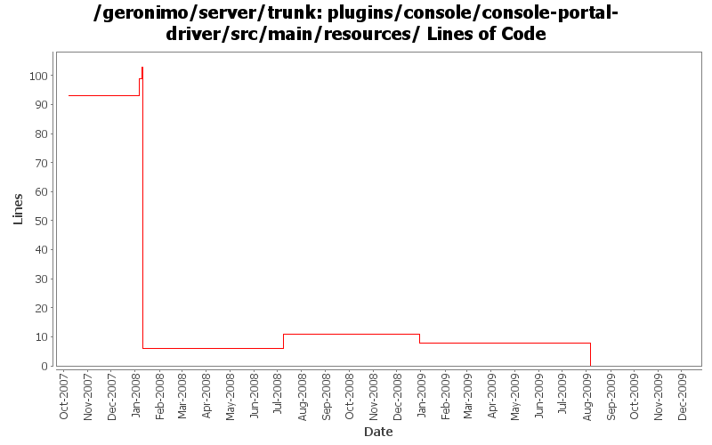

[root]/plugins/console/console-portal-driver/src/main/resources

| Author | Changes | Lines of Code | Lines per Change |
|---|---|---|---|
| Totals | 26 (100.0%) | 26 (100.0%) | 1.0 |
| dwoods | 16 (61.5%) | 21 (80.8%) | 1.3 |
| djencks | 3 (11.5%) | 4 (15.4%) | 1.3 |
| jbohn | 1 (3.8%) | 1 (3.8%) | 1.0 |
| xuhaihong | 4 (15.4%) | 0 (0.0%) | 0.0 |
| pmcmahan | 2 (7.7%) | 0 (0.0%) | 0.0 |
GERONIMO-4965 Get pluto 2 running as osgi blueprint service. Base console sort of works. Fix a bug in jetty single-bundle-ear support for locating resources
0 lines of code changed in 1 file:
GERONIMO-4763 i18n properties files should be converted to ascii at build time. (Patch from Shawn Jiang)
0 lines of code changed in 4 files:
GERONIMO-4507 Admin console should honor the priority of user agent's language setting. Applied locale-priority_fix.patch from Gang Yin.
0 lines of code changed in 2 files:
GERONIMO-4484 Extraction, localization and display of messages generated in portlets. Applied common-message_fix.patch from Gang Yin.
1 lines of code changed in 1 file:
GERONIMO-4507 Admin console should honor the priority of user agent's language setting. Applied patch from Gang Yin.
0 lines of code changed in 2 files:
GERONIMO-4474 Additional localization patches from Gang Yin.
4 lines of code changed in 2 files:
GERONIMO-4474 Pull out the text in the JSP files to resource bundle files. Patches provided by Gang Yin.
5 lines of code changed in 5 files:
GERONIMO-4081 Accessibility issues. Applied GERONIMO-4081-console.patch from Ivan.
5 lines of code changed in 2 files:
GERONIMO-3745 clean up AdminConsoleExtensionGBean
0 lines of code changed in 1 file:
GERONIMO-3732 step 3 Move plugin and deployment pages into a console plugin
4 lines of code changed in 1 file:
GERONIMO-1775 Internationalization of the Admin Console. First patch from YunFeng.
6 lines of code changed in 2 files:
GERONIMO-3674 Added private pluto build in prep for Geronimo 2.1 release
1 lines of code changed in 1 file:
GERONIMO-3509 copy the new admin console and its plugins into the server project so they
can be built and released together.
also, merge recent improvements made to the old admin console into the new console:
revs 581420 580352 576651 574637 573719 573616
0 lines of code changed in 2 files: